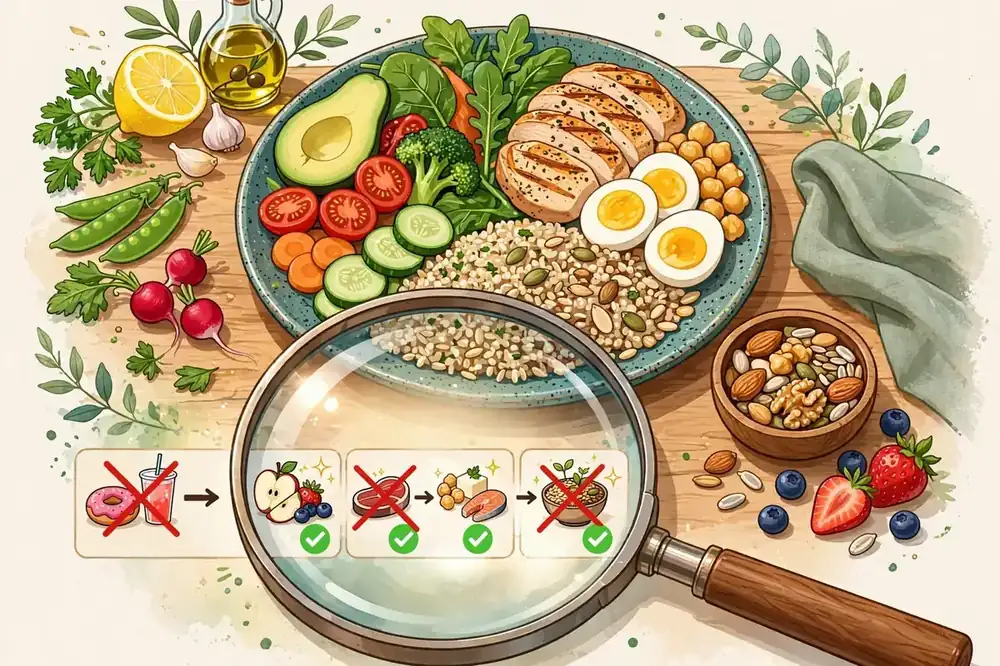

1. Mito: 'De eso no se habla'
El silencio es el primer mito, y el más dañino. La salud íntima y reproductiva es salud, sin adjetivos: incluye prevención, detección temprana y bienestar. Los médicos hablan de estos temas todos los días con total naturalidad profesional.
Normalizar la conversación —con tu pareja, con tu médico— es el paso más importante. La vergüenza retrasa diagnósticos; la información los adelanta.
2. Mito: 'Los chequeos íntimos son solo para cuando hay síntomas'
La prevención es la base de la salud íntima. Exámenes periódicos como el papanicolaou, la mamografía según edad y riesgo, o el control prostático permiten detectar a tiempo condiciones tratables. Muchas afecciones importantes no dan síntomas en etapas iniciales.
Pregunta a tu médico qué controles te corresponden según tu edad y tu historial. Un calendario de chequeos es tan normal como el del dentista.
3. Mito: 'La higiene íntima requiere productos especiales'
La zona íntima tiene su propio equilibrio y no necesita perfumes ni duchas internas. Los ginecólogos advierten que las duchas vaginales y los productos perfumados pueden alterar la flora natural y causar más problemas de los que pretenden resolver.
Agua y un jabón neutro suave en la zona externa bastan. Si hay olor fuerte persistente, picor o flujo inusual, eso no se tapa con productos: se consulta.
4. Mito: 'Ciertos temas son solo 'de mujeres' o 'de hombres''
La salud reproductiva es responsabilidad compartida. La fertilidad, la anticoncepción, la prevención de infecciones y los chequeos competen a todas las personas. Los mitos de género ('eso es cosa de mujeres') dejan a muchos sin información ni cuidados.
Las parejas que hablan abiertamente de estos temas toman mejores decisiones juntos. La información no tiene género.
5. Realidad: las infecciones se previenen y se tratan
Las infecciones de transmisión sexual son comunes, prevenibles y en su mayoría tratables. El preservativo sigue siendo el método más eficaz de prevención, y muchas ITS tienen cura con tratamiento oportuno. El estigma es más peligroso que la mayoría de las infecciones.
Hacerse pruebas con regularidad si se tiene vida sexual activa es un acto de responsabilidad, no de sospecha. Y ante cualquier síntoma, cuanto antes se consulte, mejor el pronóstico.
6. Realidad: el dolor íntimo nunca es 'normal'
Ni el dolor menstrual incapacitante, ni el dolor en las relaciones, ni las molestias urinarias recurrentes deben normalizarse. Son señales que merecen evaluación médica: endometriosis, infecciones o disfunciones del suelo pélvico tienen tratamiento.
'Aguantarse' retrasa soluciones que existen. Si algo duele de forma repetida, mereces una respuesta profesional, no resignación.
7. Realidad: la información fiable salva vidas
En salud íntima circulan más bulos que en casi ningún otro tema. Remedios caseros virales, 'trucos' sin base y consejos de foros anónimos pueden ser inútiles o directamente peligrosos. Ante la duda, la fuente debe ser un profesional o un organismo sanitario oficial.
Educarse con fuentes fiables, vacunarse cuando está indicado (como contra el VPH) y mantener los chequeos al día: esa es la verdadera 'salud íntima'. Sin morbo, sin mitos: con ciencia.
Anticoncepción: información, no mitos
Existen métodos anticonceptivos para casi cada situación, pero la desinformación abunda. Ningún método (salvo la abstinencia) es 100% eficaz, pero los de larga duración (DIU, implante) superan el 99% con el uso típico, muy por encima de los métodos que dependen de la memoria diaria.
La elección debe ser personal y médica: lo que le va bien a una amiga puede no irte bien a ti. Habla con tu médico de opciones, efectos y de la doble protección (anticonceptivo + preservativo) si hay riesgo de infecciones. Informarse es cuidarse.
La visita al especialista, sin miedo
Muchas personas retrasan su primera visita al ginecólogo o al urólogo por vergüenza, y es una lástima. Son consultas de rutina: preguntas, exploración básica y orientación. Puedes pedir que te expliquen cada paso, ir acompañada/o si lo deseas, y cambiar de profesional si no te sientes respetada/o.
Prepara tu visita: anota tus dudas (las 'tontas' incluidas), tu historial y tus síntomas con fechas. Salir de la consulta con respuestas claras es tu derecho. La primera vez cuesta; después se vuelve tan normal como ir al dentista.
Preguntas frecuentes
Este artículo es informativo y no sustituye el consejo médico profesional. Consulta a tu médico ante cualquier duda sobre tu salud.
Artículos relacionados
Lo que tu cuerpo te dice: 9 señales de salud que no debes ignorar
Tu cuerpo avisa antes de enfermar en serio. Estas 9 señales (cansancio raro, cambios en la piel, sed excesiva.

7 cosas que tu cuerpo hace mientras duermes (y por qué importan)
Mientras duermes, tu cuerpo trabaja sin parar: repara músculos, archiva recuerdos y limpia tu cerebro. Descubr

10 mitos de nutrición que la ciencia ya desmintió
¿Los carbohidratos engordan? ¿Comer de noche es malo? Desmontamos 10 mitos de nutrición muy extendidos con lo